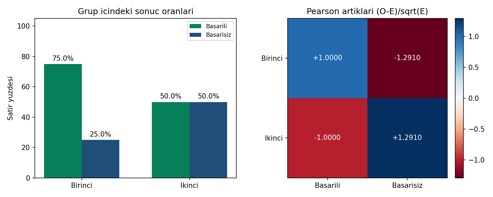

12 / KATEGORIK VERILER VE KI-KARE TESTI
Sayıları doğru ağırlıkla karşılaştır.
2 × 2 tablo · 4 hücre · toplam 80 gözlem
Sorudan yönteme
Birinci grupta başarı oranı %75, ikinci grupta %50. Grup ile sonuç arasında ilişki olduğuna dair kanıt var mı?
Beklenen frekans = satır toplamı × sütun toplamı / N. Pearson χ² = Σ(O−E)²/E. Bu örnekte süreklilik düzeltmesi uygulanmaz.
Gör, karşılaştır, yorumla

χ²(1) = 5,333333; p = 0,020921; Cramér V = 0,258199. En küçük beklenen frekans 15’tir. α = 0,05 düzeyinde bağımsızlık hipotezi reddedilir.
CSV’de dört hücre vardır; katılımcı sayısı 80’dir. SPSS CROSSTABS sırasında frekans ağırlığı kullanılır ve sonra kapatılır. Pearson satırını karşılaştırın; Yates düzeltmesi veya Fisher testi başka bir hesap verir.
32 referans değerinin tamamı
Gösterim yuvarlatılmıştır; kodlar tam duyarlıklı CSV’yi kullanır.
| Grup | Ölçü | Değer |
|---|---|---|
| gozlenen | Birinci_Basarili | 30 |
| gozlenen | Birinci_Basarisiz | 10 |
| gozlenen | Ikinci_Basarili | 20 |
| gozlenen | Ikinci_Basarisiz | 20 |
| beklenen | Birinci_Basarili | 25 |
| beklenen | Birinci_Basarisiz | 15 |
| beklenen | Ikinci_Basarili | 25 |
| beklenen | Ikinci_Basarisiz | 15 |
| katki | Birinci_Basarili | 1 |
| katki | Birinci_Basarisiz | 1.666666667 |
| katki | Ikinci_Basarili | 1 |
| katki | Ikinci_Basarisiz | 1.666666667 |
| pearson_artik | Birinci_Basarili | 1 |
| pearson_artik | Birinci_Basarisiz | -1.290994449 |
| pearson_artik | Ikinci_Basarili | -1 |
| pearson_artik | Ikinci_Basarisiz | 1.290994449 |
| satir_orani | Birinci_Basarili | 0.75 |
| satir_orani | Birinci_Basarisiz | 0.25 |
| satir_orani | Ikinci_Basarili | 0.5 |
| satir_orani | Ikinci_Basarisiz | 0.5 |
| toplamlar | toplam | 80 |
| toplamlar | satir_Birinci | 40 |
| toplamlar | satir_Ikinci | 40 |
| toplamlar | sutun_Basarili | 50 |
| toplamlar | sutun_Basarisiz | 30 |
| test | ki_kare | 5.333333333 |
| test | serbestlik | 1 |
| test | p | 0.02092133534 |
| test | cramer_v | 0.2581988897 |
| test | min_beklenen | 15 |
| test | alfa | 0.05 |
| test | reddet | 1 |
Aynı veri, üç yazılım
ZIP’i tamamen ayıklayın. Çalışma klasörü b12/ornek-01 olmalıdır. Kodlar bilgisayarınızda çalışır.
Python
py cozum.py --check --grafikNumPy, pandas, SciPy ve Matplotlib gerekir. Beklenen: 32 kontrol değeri eşleşiyor.
R / RStudio
Rscript --vanilla cozum.R --check --grafikStandart R yeterlidir. RStudio konsolunda source("cozum.R") yalnız hesapları gösterir; otomatik kontrol için:
kontrol_et(sonuc, read.csv("beklenen-sonuclar.csv", stringsAsFactors=FALSE))IBM SPSS 29 · çalışma kabulü bekliyor
SPSS 29 adım adım kontrol rehberi
CD 'C:/.../b12/ornek-01'.
INSERT FILE='spss-dogrula.sps' ERROR=STOP.Sonra aynı klasörde terminalden:
py spss_karsilastir.py --surum 29 --rapor spss-sonuc.jsonSPSS dışa aktarımı olmadan bu kontrol geçmez. SPV çıktısını ve JSON raporunu birlikte saklayın.
Önce tahmin et, sonra açıkla
Birinci grubun başarılı hücresinde gözlenen 30, beklenen 25 ise χ² katkısı ve Pearson artığı nedir?
Gerekçeli yanıtı göster
Katkı = (30−25)²/25 = 1; Pearson artığı = (30−25)/√25 = 1. İlişki bulunması nedensellik kanıtı değildir.
Doğrulama durumu
| Ortam | Durum |
|---|---|
| Python | 32 referans değeri; grafik üretimi ve hatalı girdi kontrolleri geçti. |
| R 4.3.3 | 32 referans değeri ve Python–R sonuç karşılaştırması geçti. |
| IBM SPSS | Syntax hazır. Gerçek SPSS çalıştırması ve çıktı kabulü bekliyor. |
17 Eylül 2026. Sayısal uyum, araştırma varsayımlarının sağlandığını kanıtlamaz.